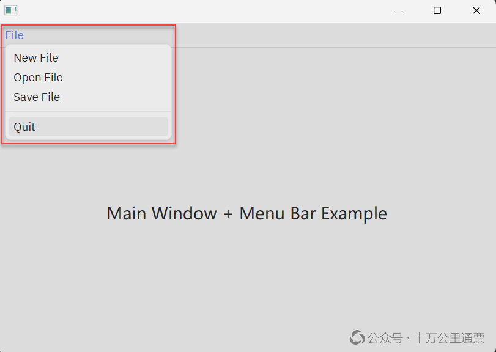

Rust GPUI 桌面应用开发入门：Menu 菜单

菜单往往是我们创建一个桌面应用时第一个需要编写的组件，本文我们系统地介绍一下如何在 GPUI 中创建菜单。特别说明：本文探讨的是 Zed 项目内而非 crates.io 上的 GPUI ，鉴于 Zed 项目迭代迅速且不保证 GPUI 模块向前兼容，验证和测试时要特别注意版本。本文基于的是 Zed 当前（2026年9月）的最新版本 v1.20.2 。
Zed 的菜单项在不同平台上的渲染方式是不一样的，在 Windows / Linux 平台上是由 Zed 自己来渲染的，所以它的 look & feel 跟平台上的普通应用是不一样的；只有在 macOS 上才是调用系统 API 绘制的。本文，我们只专注 Zed 自行绘制的菜单。
为了配合讲解，本文还提供一个示例，代码参见附录。这个示例完整地展示了创建一个 GPUI 菜单的全部所需工作，程序运行起来的界面如下：

本文的定位是：先了解一个菜单的整体创建流程，不过度深入细节。GPUI 的菜单涉及两个重要的组件：PopoverMenu 和 ContextMenu，它们都比较复杂，各自封装了很多自动化机制，但作为用户来讲，可以把它们作为组件直接使用，在现阶段还不需要深入探索它们的实现细节。
1. 菜单的数据结构
首先需要注意我们讨论的版本是 v1.20.2 ，因为就目前的版本来看，在数据结构上有一些“历史”遗留问题，在以后的版本中可能会重构。目前，在 Zed / GPUI 中存在两套菜单数据结构：Menu / MenuItem 和 OwnedMenu / OwnedMenuItem，两者的字段完全一样，区别只是前者无法克隆，后者可以克隆，所以，实际上，支持克隆的 OwnedMenu / OwnedMenuItem 可以完全取代 Menu / MenuItem，而且我们也没有在其他 GUI 框架中见过为菜单提供两套数据结构的先例。之所以会出现这种冗余的设计，大概率是历史遗留问题，因为检查提交历史发现，早期版本中没有 OwnedMenu 只有 Menu，且 Menu 需要维护生命周期： Menu<'a>，name: &'a str ，是后来去掉了生命周期，改为了复制一份新实例，但不知道是什么原因，项目没有彻底重构，而是选择了让 Menu 和 OwnedMenu 共存。
下面，我们着重看一下 Menu / MenuItem 这套数据结构：一个 Menu 包含多个 MenuItem，MenuItem 是一个枚举，它有多个变体：Separator、Submenu、SystemMenu、Action，我们重点关注 Action ，它是会响应点击操作的标准菜单项：
1 | pub enum MenuItem { |
这些变体之间其实没有任何共性，很多人会觉得在这里把它们组织到同一个枚举中很“奇怪”，实际上，这里才是 Rust 枚举的典型应用。Rust 中的枚举其实是 ADT（代数数据类型） 中“和类型”(Sum Type)的实现，并且是众多语言中最为“贴切”的实现。它表达的关系是 “是其中之一（one-of）”，并不是 OOP 继承里的 “是一种（is-a）”，也就是说：Rust 中的枚举和我们在 Java / C++ 等语言中认为的枚举是完全不同的。在这个 MenuItem 的示例中，Separator、Submenu、Action 之间确实没有行为上的共性，它们唯一的共性是：都能出现在 Vec 里。Zed 就是用 enum 来表示“它们能放在同一个封闭集合中“，而不是“共享一些方法的类族“。不过，Zed 针对 MenuItem 设计的关联方法还是有一些小问题的。MenuItem 上的关联方法可以分成两类：
• 静态工厂方法 ：separator()、submenu()、action()、os_action()：这些方法用于创建对应的变体，它们不带 self 参数，作为静态工厂方法关联到 MenuItem 上是合适的；
• 变体专属方法 ：：checked()、is_checked()、disabled() 这几个在非 Action 变体上静默无效，这些方法在设计上确实算是小“瑕疵”。更好的做法是：引入一个新的结构体，可以叫 ActionMenuItem，把现有 Action 的字段和以上几个方法重构到这个新结构体中，在枚举中定义为 Action(ActionMenuItem) ，类似 SystemMenu(OsMenu) 。
在 MenuItem 的变体中，最重要的就是 MenuItem::Action ，它是由 GPUI 自行绘制的菜单项，它持有一个 action: Box<dyn Action> ，这个 action（类型是 gpui::Action）字段非常重要，当这个菜单项被点击时，这个 action 将会被自动分发出去，然后走 Action 响应流程，因为 GPUI 的菜单系统不是“点菜单 → 调回调函数“，而是“点菜单 → 派发一个 Action，走和键盘快捷键完全相同的分发链路“ ，这个 Action 就是菜单项与应用其余部分之间唯一的桥梁。
2. 创建菜单
在代码层面上，创建菜单总共有 5 个关键步骤：
① 定义 Action
1 | actions!(menu_example, [NewFile, OpenFile, SaveFile, Quit]); |
很多 GUI 应用的菜单都是使用 Action 机制进行响应的，而不是 Event，原因不难解释：一个菜单项往往是一个可独立执行的“命令”，并不需要指明操作对象，或者说操作对象是整个应用。在这种情况下，使用 Action 机制响应更加自然，特别是很多菜单项通常还关联了快捷键，响应快捷键本来就需要使用 Action，所以响应菜单点击就没有必要再走 Event 的分发链路了，复用快捷键的 Action 是最明智的。关于这个话题，推荐阅读 《Zed / GPUI 设计觉醒：现代编辑器 Action 机制解读》 ，这篇文章给出了深刻而全面的分析。
② 创建 Menu / MenuItem
用户需要先创建菜单的数据模型，也就是构建一个 Vec<Menu> 出来，如前所述，由于历史原因，人们一般是使用 Menu / MenuItem 来构建，然后，把这个构建好的 Vec<Menu> 通过
cx.set_menus() 设置给平台层。注意：这是一步重要的分水岭，平台层拿到菜单的数据模型后，在不同操作系统上的处理方式是不同的，在 macOS 上，拿到这些数据后就直接调用系统的 API 去创建菜单了，也就是说，这时的 set_menus() 这个方法明是“名副其实”的在“设置菜单”；而在 Windows / Linux 上，这一步操作几乎没有任何意义，它只是 consume 掉了 Vec<Menu> ，把 Menu 转成了 OwnedMenu 保存在平台层上，在使用 get_menus() 方法时提供给调用方，仅此而已。GPUI 不会调用 Windows / Linux 的系统 API 去绘制菜单，而是需要用户自己编写 div 去绘制。之所以还要这样写，只是为了让 set_menus() / get_menus() 这对 API 在各平台上保持一致的用法。下面的代码创建了一个 File 菜单，包含了四个菜单项和一个分隔符：
1 | fn app_menus() -> Vec<Menu> { |
MenuItem::action() 是一个工厂方法，专门用来创建 MenuItem::Action。它的第一个参数是菜单的文本，第二个参数就是这个 MenuItem 对应的 Action，也就是 MenuItem::Action 里的 action: Box<dyn Action> 字段。Action 是菜单项可以响应点击操作和快捷键的关键，尽管菜单项是通过鼠标点击触发的，但是在触发后会自动 dispatch 它自己持有的这个 Action，然后按 Action 的响应流程去处理。
③ 将 Menu / MenuItem 设置给平台层
此步骤只有一行代码：
1 | /// crates/_examples/crates/menu_example/src/main.rs:134 |
关于这一步操作的意义我们在前面也解释过了，这里再复述一下：如果是在 macOS 上，这是有实质意义的一步，因为它将调用系统 API 创建真正的 mac 上的菜单。但是在 Windows / Linux 上，主要是保持平台层 API 一致，把创建好的 Menu 传给平台层留存一份而已。存进去以后 Vec<Menu> 就会被转换成 Vec<OwnedMenuItem>，然后可以通过 get_menus() 获取。
④ 渲染 Menu / MenuItem
在 Windows / Linux 上，渲染 Menu / MenuItem 的工作需要用户通过编码来完成。这段工作的整体逻辑并不复杂，概括起来就是：根据 OwnedMenu 创建出 ContextMenu，然后将创建出的 ContextMenu 设给 PopoverMenu，最后放到 div 中去渲染。
我们按逆序来介绍这个流程，先看一下窗口的布局。首先，需要在窗口上沿创建一个 div 作为菜单栏：
1 | div() |
然后，在这个 div 中添加一个 PopoverMenu。 PopoverMenu 是一个 UI 元素，它实现了 Element ，没有实现 Render ，没有自己的 Entity ，跟 div() 一样，每次渲染都会被重新创建实例，用完就丢。它会生成自己的 div 来展示自己。PopoverMenu 算是一个比较完善的独立组件了，做为用户来说，没有必要再往下深究它的实现细节了。我们继续沿着调用链向下游走，看一下创建 PopoverMenu 的方法 render_menu_button() ：
1 | fn render_menu_button(&self, menu: &OwnedMenu) -> impl IntoElement { |
menu() 的 闭包 有 'static 约束，不允许出现短期引用。所以必须克隆一份 menu 再 move 到闭包中去，这就是为什么 Menu / MenuItem 必须支持 clone 的直接原因。至于为什么 PopoverMenu 的 menu() 方法要求闭包必须得是 'static 的？其原因是：这个闭包将作为 PopoverMenu 一个名为 menu_builder 的字段而存在：
1 | pub fn menu( |
而这个字段的类型声明要求闭包必须是 'static 的：
1 | menu_builder: Option<Rc<dyn Fn(&mut Window, &mut App) -> Option<Entity<M>> + 'static>> |
这个字段的类型看上去有一点恐怖是吧？拆解一下就是：
1 | Option<Rc<dyn Fn(&mut Window, &mut App) -> Option<Entity<M>> + 'static>> |
这里涉及一个知识点， 对于 Fn(...) -> T 这种函数或闭包的类型描述，T 是不允许带 + 的，也就是说它描述的函数或闭包的返回值的类型是不能再叠加类型约束的！所以，对于 Fn(...) -> T + 'static 来说是没歧义的，'static 修饰的是只能是整个闭包，而不会是返回值！类似的典型案例还有 spawn 闭包的类型约束： F: FnOnce() -> T + Send + 'static 。实际上，这里的 'static 是多余的，不写出来也会有这个约束，因为 Rc'static 。
menu() 闭包的 'static 约束只是表面原因，根本原因是：这个闭包，也就是 PopoverMenu 的 menu_builder 会活得比它这个 menu 参数以及 PopoverMenu 本身都要久，不要忘了，它是包裹在 Rc 中的，它被编译成结构体分配在堆上，还会在别处被调用。总之， 要构建一个 PopoverMenu，就必须要 clone 一个 OwnedMenu 传进它的 menu() 闭包中 。我从 menu() 的闭包参数 f 继续往下探索：
1 | f: impl Fn(&mut Window, &mut App) -> Option<Entity<M>> + 'static |
传给 menu 的闭包可以有 &mut Window 和 &mut App 这两个参数，但主要是它必须能返回一个 Entity，这个 Entity 要包裹一个 M: ManagedView 的具体实现。这个 ManagedView 是指生命周期会被另一个 View 所管理的 View，本质上是多个 supertrait 的叠加：
1 | /// ManagedView is a view (like a Modal, Popover, Menu, etc.) |
而我们实际上打算返回的是一个 ContextMenu 的实例，以下就是 menu 闭包的主要实现部分，也就是 build_context_menu() 方法：
1 | /// Convert an `OwnedMenu` (from `cx.get_menus()`) into a `ContextMenu`, |
build_context_menu() 方法就是专门创建一个 ContextMenu 实例的工厂方法，这是我们继 PopoverMenu 之后看到的第二种 Menu，两者刚好是一种互补关系：
-
PopoverMenu：负责“何时弹出、弹在哪里”，弹出的内容本身不归它管。
-
ContextMenu：只负责“菜单内容和交互”，不管自己怎么弹出、放在哪里。
ContextMenu 是一个有状态的 View，由于它分别实现了 Render、Focusable 和 EventEmitter
1 | pub fn build( |
它也是需要一个闭包作为参数。这里是一种典型的闭包应用场景，build 方法接近于一个模板方法，负责构建算法的整体框架并提供必要的环境和上下文，这个 cx.new() 方法其实做了不少重要的工作，但我们不会再深入到这一层去解读了。用户负责提供部分核心逻辑，这部分逻辑就会使用闭包描述然后传给 build 方法就可以了。
然后，我们来看一下传给 build 方法的那个闭包： items.into_iter().fold(...) ，这是一段典型的函数式风格的 fold 操作，它会迭代 Vec<OwnedMenuItem> 中的每一个元素，将它们转换成一个 ContextMenuItem，然后添加到一个初始时为空的 ContextMenu 中。在 fold 方法里，有一个细节需要解释，那就是它的那个 menu 参数，也就是初始时为空的 ContextMenu 的实例是在哪里创建的？这个 menu 的实例化确实隐藏地有点深，它的初始化位置是：
1 | main.rs:50 ContextMenu::build(window, cx, f) |
⑤ 注册 Action 响应函数
当我们点击一个菜单项，它会自动 dispatch 自己所关联的那个 Action，这一功能已经封装在了 menu 中，不需要我们再做任何工作，我们唯一需要做的是：通过 cx 注册 Action 的响应函数，以便在菜单点击后分发出来的 Action 能找到对应的响应函数。具体代码是：
1 | cx.on_action(|action: &NewFile, _cx| { |
至此，一个菜单的全部创建流程就结束了。
3. 附录
1 | use assets::Assets; |
Rust GPUI 桌面应用开发入门：Menu 菜单
https://laurence.enlightgram.com/gpui/gpui-getting-started-4-menu/